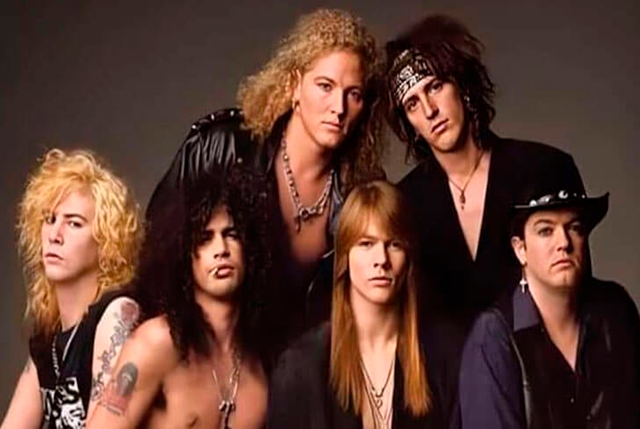
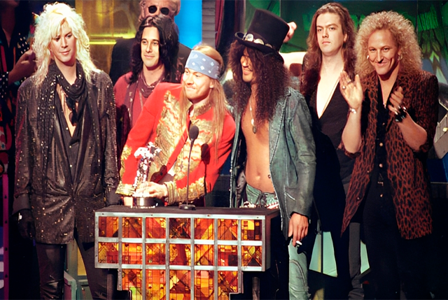
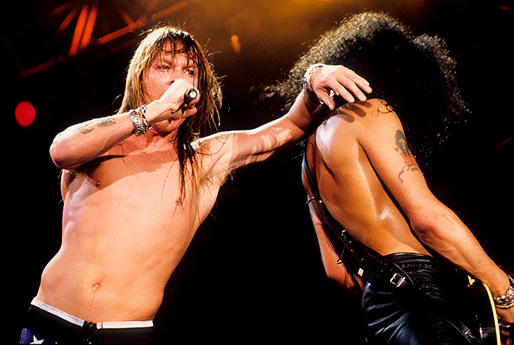
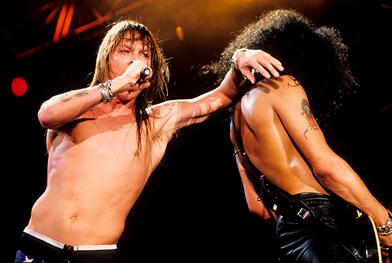
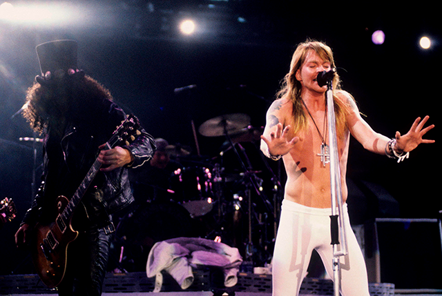
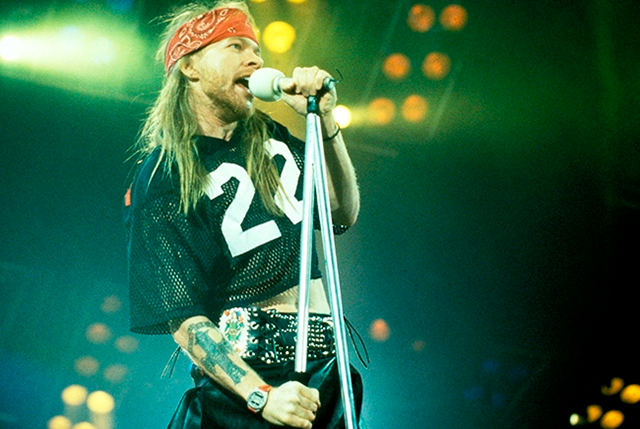
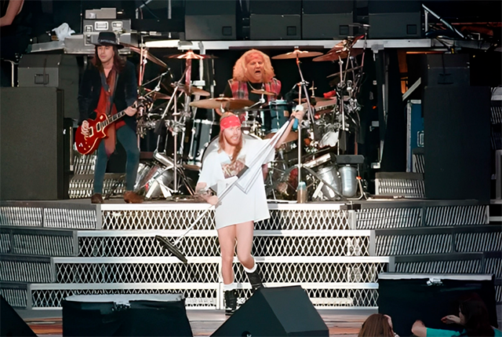
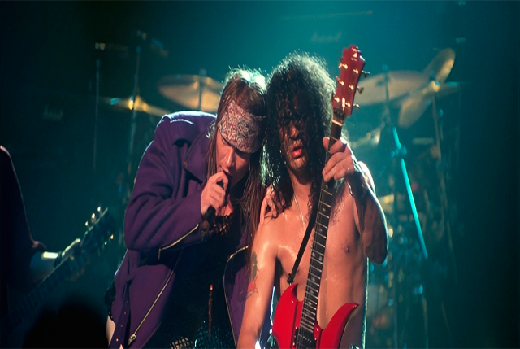
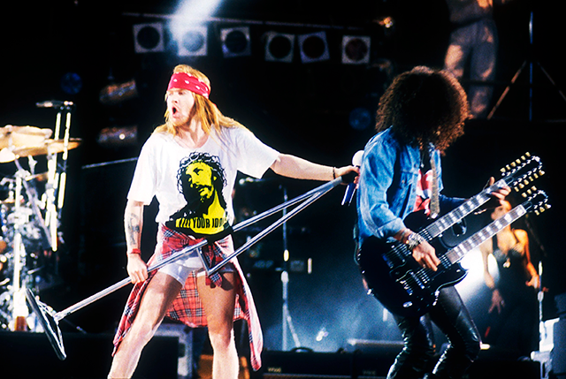
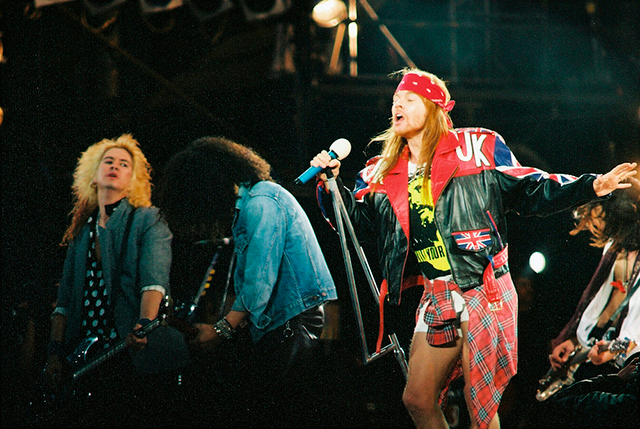

Uma Historia Guns N' Roses
Uma Historia Guns N' Roses 
Formação classica com Duff Mckagan, Slash (Saul Hudson), Matt Sorum, Axl Rose Izzy Stradlin e Dizzy Reed, formação que logo depois mudou com Gilby Clarke entrando no lugar de Izzy Stradlin essa foi a formação que lançou o album duplo, Use Your Illusion 1+2 e The Spaghetti Incident?.
 



